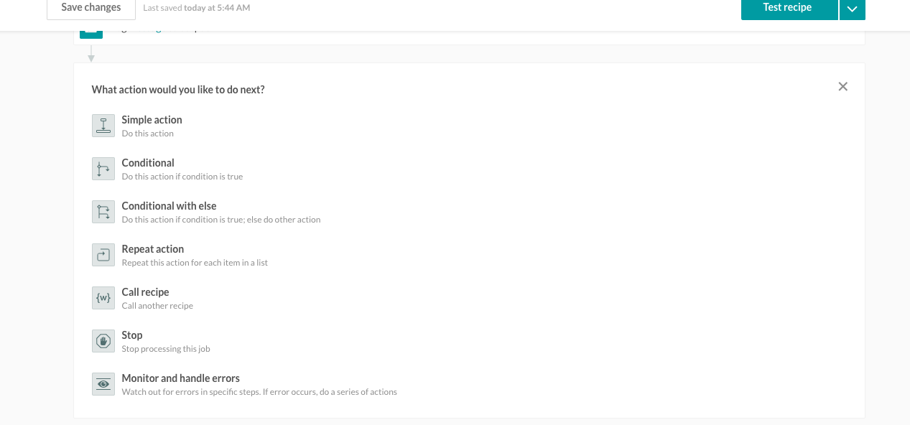
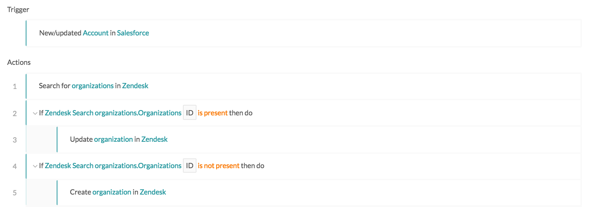
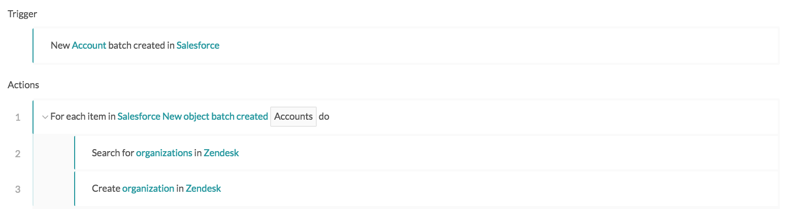
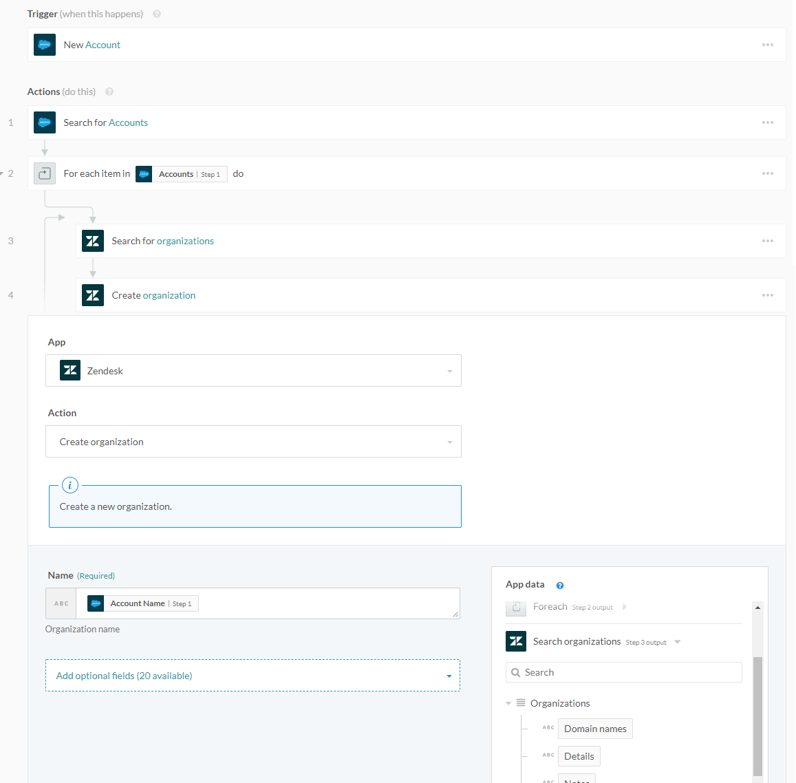
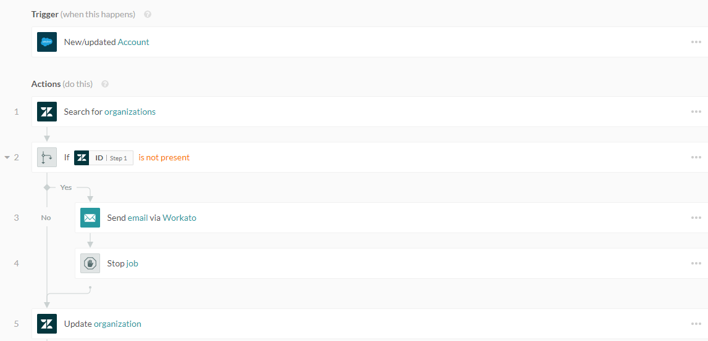
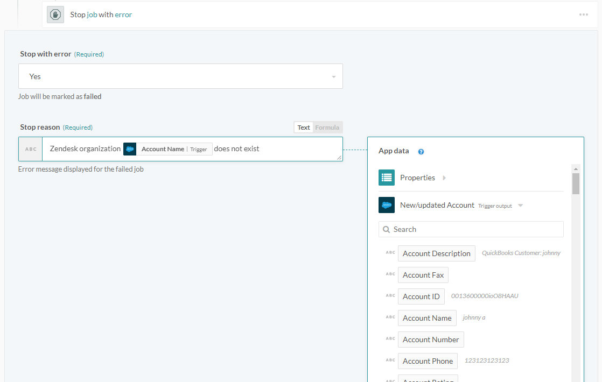
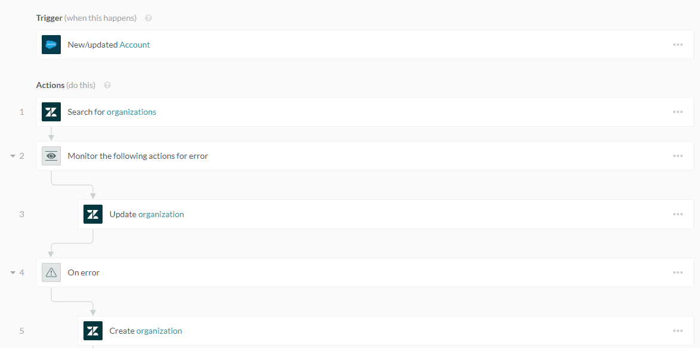

Steps
Recipe steps can be actions, or control flow statements that help you describe business logic.
 Various recipe steps available in recipe editor
Action step
Actions carry out an operation in your target app, usually a create, update, or search operation. Each action requires a set of input fields and typically return data i.e. output data tree.
Example: Action
The following step carries out a Search organizations action in Zendesk. The input fields on the left shows the available fields to search for a Zendesk organization by:
- Name
- Tags
- Notes
- Details
In the following case, the Search organization action is carried out by name.
 Mapping fields to an action step Example recipe
Mapping fields to an action step Example recipe
When the Search organizations action has been carried out, Zendesk returns data about the organizations found, if any. The output datatree displays available fields for mapping in subsequent steps.
In the following case, the Update organization action uses the ID field from the Search organizations action to identify which Zendesk organization to update (ID field as highlighted).

Mapping fields to an action step Example recipe
Conditional action step
Conditional actions will only be carried out if the specified condition is true. All actions indented within a conditional action block will be carried out only if that condition is true.
Example: Conditional
The following recipe has two conditional steps:
- If Zendesk organization was found, update Zendesk organization
- If Zendesk organization was not found, create new Zendesk organization

Recipe that uses conditional steps to decide whether to create or update Zendesk organization Example recipe
In this example, any job can only proceed through either one of the conditional steps, as the Zendesk organization must have either been found or not.
Repeat step
When working with a list of items (e.g. a list of invoice line items), you may need to carry out a set of actions for every item in the list. The repeat step helps you do that. Actions indented within a repeat block will be carried out for all items in the list.
The input to the repeat step is a list. Actions within a repeat block, should use data output by the Foreach datatree. This ensures that every item in the list is processed.
Example: Repeat
Refer to the example scenario of syncing Salesforce accounts (using the batch trigger) to Zendesk as organizations.

Recipe that uses the Repeat step to iterate through list of Salesforce accounts Example recipe
In this example, the trigger returns a list of Salesforce accounts. Since Zendesk does not support batch actions, each Salesforce account must be added one at a time to Zendesk.
The list datapill has to be passed into the repeat step. When the input list field is selected, only list type datapills are usable in the datatree, as shown below. List type pills can be identified via their stack icon.

Mapping a list data pill into the Repeat step's input list field Example recipe
Datapills from the Foreach output datatree should be mapped to ensure that values from each list item are used when the action is repeated. For example, if two Salesforce accounts are fetched by the trigger, using pills from the Foreach datatree ensures that the Create organization action creates a Zendesk organization with the data from the first Salesforce account on its first iteration, then with the data from the second Salesforce account on its second iteration.

Using datapills from the Repeat step's datatree. This ensures values from the list being iterated through are used. Example recipe
The following displays the mapping from the Foreach datatree.

Datapills are mapped from the Repeat step's datatree Example recipe
For further Repeat step examples or more info about list processing, refer to the List management article.
Call recipe step
Call recipe will run another recipe (named a callable recipe). Callable recipes are like functional calls in programming languages. They offer an easy way to resuse recipe logic.
You should note that callable recipes are executed synchronously. i.e. the calling recipe will be blocked waiting for the called recipe to finish processing.
Callable recipes are an advanced feature in Workato that you can read more about in the Callable recipes article.
Stop step
The stop step ends a single job from being processed any further. It is usually used in cases when there is a an error in the business logic and further processing of the job is not required.
The stop step can be configured to mark the job as a failed or a successful, depending on business logic.
Example: Stop
The following recipe expects all Salesforce accounts to be present in Zendesk as organizations. In cases where no corresponding Zendesk organization is found, the recipe will stop processing further actions.

Recipe that utilizes the Stop step to send email and end job Example recipe
Any job ran by this recipe can proceed through either one of the conditional step, as the Zendesk organization must have either been found or not. If not found, the job will stop at Step 4. If found, the job will not carry out actions within the conditional step (Steps 3 and 4), instead only updating the matching Zendesk organization.
This recipe marks the job as an error, so that the recipe owner will take notice of this job and attempt to rerun it. 
Configuring the Step step's error message Example recipe˚
Action with error handler step
This step, allows you watch for errors in actions, and when an error occurs, take remedial actions. It is similar to try/catch concept in programming lanaguages.
Common remedial steps are to notify users of the error via email or error messages in the app, or to carry out a rollback (i.e. reversing the job by deleting any created or half-created records).
This step consists of 2 blocks: the Monitor actions for error and the On error block. Actions to be monitored for errors should be within the Monitor block. If all actions are successful, the On error block will be ignored. However, if any action in the Monitor block results in an error, the actions within the On error block will be executed.
Example: Error handler
The following recipe tries to update the Zendesk organization right after the search step, irrespective of whether any Zendesk organizations were found. In cases where no matching Zendesk organization is found, the Update organization action will fail. 
Recipe that uses the error monitor to monitor failures in updating Zendesk organizations Example recipe
As the recipe catches failed actions within the error monitor block, failed Update organization actions will be caught, and the recipe proceeds to carry out steps within the On error block. In this case, it seems that the only reason for the update failing is because no matching Zendesk organization was found. Hence the remedial step creates a new Zendesk organization.